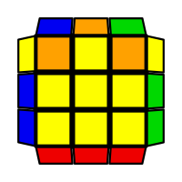
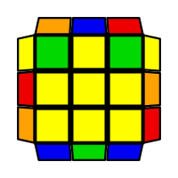
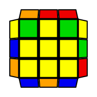

Case names
Every ZBLL case in ZBTrain has a three-part name, like T-6-AsA. Once you know what each part means, the names stop looking like noise.
The 7 sets
| Set | Cases | Notes |
|---|---|---|
| T | 72 | 6 corner groups × 12 edge cases |
| U | 72 | |
| L | 72 | |
| H | 40 | H looks the same after a half turn, so many cases are duplicates of each other |
| Pi | 72 | 6 corner groups × 12 edge cases |
| Sune | 72 | |
| Antisune | 72 | |
| Total | 472 | Plus the 21 PLLs (corners already oriented) = 493 |
The corner groups
2GLL: the corners are already in the right places relative to each other. These cases can all be solved with just R and U turns, which is where the name comes from (2-generator last layer). They tend to be the easiest algs.Diag: two corners are swapped diagonally.3,4,5,6: the different adjacent swaps (two neighbouring corners swapped), depending on where the swap is relative to the OCLL shape.
So T-6 means "a T shape with corner pattern 6": exactly 12 cases.
The edge letters
The last part describes the edges using three letters:
- C: same colour
- A: an adjacent colour (a neighbouring side)
- O: the opposite colour
For T, U, L and Sune cases, the letters compare the stickers around the front-right top corner in the case picture:
- The first letter compares the front edge with the corner's front sticker.
- The last letter compares the right edge with the corner's right sticker.
- The middle letter is
sfor these "straight" comparisons, giving 9 cases (CsC,CsA, …OsO). - The other 3 cases compare them crosswise instead (the front edge with the corner's right sticker, and the right edge with its front sticker), marked
x:CxO,OxCandOxO.
These are the same 12 patterns BH recognition uses. See all 12 drawn out on the Recognition page.

CsC: both edges match the corner
OsO: both edges are the opposite colour
OxO: opposite, compared crosswiseH, Pi and Antisune use the same letters, but they're read from a different reference, so for those just go by the case picture. ZBTrain shows the picture everywhere a case appears.
See a case solved
T-2GLL-OxO: a 2GLL case, so the alg only needs R and U.Names on other sites
Sheets and sites don't all use the same names. ZBLL Explorer numbers its cases (like "H 26"), and many sheets label corner groups T1–T6. They're the same cases, just labelled differently. ZBTrain's Sheets page doesn't rely on names at all: it checks which case each alg actually solves, so you can import any sheet.
You don't have to memorise the names to solve the cases. They're labels for sheets and trainers. What you do during a solve is recognition.
Sources and further reading
- ZBLL on the Speedsolving.com wiki
- ZBLL Full Guide by Krzysztof Bloch (yoruba), ZZ Method
- ZBLL Explorer by pepkin88: algs from many sources for every case
- cubing.js for the cube animations